2. Элементы и узлы аналоговых устройств
2.1. Классификация аналоговых устройств
2.2. Усилители
2.3. Интегральные операционные усилители
2.4. Электронные регуляторы и аналоговые ключи
2.5. Фильтры на интегральных схемах
2.6. Автогенераторы на интегральных схемах
2. Элементы и узлы аналоговых устройств
2.1. Классификация аналоговых устройств
Аналоговым называются устройства, у которых сигналы являются непрерывными функциями времени. К основным классам аналоговых устройств относятся: усилители, аналоговые фильтры и генераторы, электронные и автоматические регуляторы, аналоговые перемножители напряжений, преобразователи, вторичные источники питания.
В зависимости от конкретной области применения аналоговые устройства подразделяются на измерительные, телевизионные, радиоприемные, телефонные, радиовещательные и др. Дополнительными признаками для классификации являются диапазон рабочих частот и потребляемая мощность. В зависимости от массы и объема аналоговые устройства подразделяются на носимые, бортовые и стационарные. В зависимости от используемой элементной базы аналоговые устройства подразделяются на электровакуумные, транзисторные и интегральные. Наиболее перспективными являются интегральные аналоговые устройства, обладающие высокой надежностью, малой массой, объемом, экономичностью и другими. Классификация аналоговых интегральных микросхем, соответствующая ГОСТ 17021—75, приведена в табл. 2.1.
Таблица 2.1.
| Подгруппа и вид ИС |
Буквенное обозначение |
Подгруппа и вид ИС |
Буквенное обозначение |
| Усилители: высокой частоты операционные повторители широкополосные импульсных сигналов низкой частоты постоянного тока прочие |
УВ УД УЕ УК УИ УН УТ УП |
Преобразователи: цифро-аналоговые аналогово-цифровые умножители частоты делители частоты мощности напряжения перемножители сигналов |
ПА ПВ ПЕ ПК ПМ ПН ПС |
| Фильтры: верхних частот полосовые нижних частот режекторные прочие |
ФВ ФЕ ФН ФР ФП |
Вторичные источники питания: выпрямители стабилизаторы напряжения импульсные стабилизаторы напряжения непрерывные стабилизаторы тока преобразователи прочие |
ЕВ ЕК ЕН ЕТ ЕМ ЕП |
| Генераторы: гармонических сигналов сигналов специальной формы линейно изменяющихся сигналов прочие |
ГС ГФ ГЛ ГП |
||
| Ключи и коммутаторы: напряжения тока прочие |
КН КТ КП |
2.2. Усилители
Важным назначением электронных приборов является усиление электрических сигналов. Устройства для решения этой задачи называются усилителями.
Структурная схема усилителя приведена на рис.2.1.
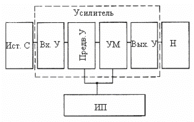
Рисунок 2.1.
Устройство содержит входное устройство (ВХУ) для передачи сигнала от источника (Ист. С) ко входу первого каскада. Его применяют, когда непосредственное подключение источника сигнала ко входу усилителя невозможно или нецелесообразно. Обычно входное устройство выполняется в виде трансформатора или RC-цепочки, предотвращающих прохождение постоянной составляющей тока от источника к усилителю, или наоборот.
Предварительный усилитель (Предв. У) состоит из одного или нескольких каскадов усиления. Он служит для усиления входного сигнала до величины, достаточной для работы усилителя мощности. Наиболее часто в качестве предварительных усилителей используют усилители напряжения на транзисторах. Усилитель мощности (УМ) служит для отдачи в нагрузку необходимой
мощности сигнала. В зависимости от отдаваемой мощности он содержит один или несколько каскадов усиления. Выходное устройство (Вых. У) используется для передачи усиленного сигнала из выходной цепи усилителя мощности в нагрузку (Н). Оно применяется в тех случаях, когда непосредственное подключение нагрузки к усилителю мощности невозможно или нецелесообразно. Тогда роль выходного устройства могут выполнять разделительный конденсатор или трансформатор, не пропускающие постоянную составляющую тока с выхода усилителя в нагрузку. При использовании трансформатора добиваются согласования сопротивления выхода усилителя и нагрузки с целью достижения максимальных значений КПД и малых нелинейных искажений. В усилителях на основе интегральных схем избегают применения трансформаторов вследствие их больших габаритных размеров и технологических трудностей изготовления.
Источник питания обеспечивает питание активных элементов усилителя.
Основными признаками для классификации усилителей являются диапазон рабочих частот и параметры, характеризующие его усилительные способности: ток, напряжение, мощность. Важнейшими техническими показателями усилителя являются: коэффициент усиления, входное и выходное сопротивления, диапазон усиливаемых частот, динамический диапазон, нелинейные, частотные и фазовые искажения. Усилители мощности характеризуются выходной мощностью и КПД.
Для реализации высоких значений коэффициента усиления используют последовательное включение нескольких каскадов. Для многокаскадных усилителей (содержащих n каскадов) общий коэффициент усиления равен произведению коэффициентов усиления отдельных каскадов:
К = К1
К2 ... Кn.
Первый каскад определяет входное сопротивление усилителя
RВХ = UBХ / IВХ.
Если этот каскад работает при слабых входных сигналах, то к нему предъявляются жесткие требования по уровню собственных шумов.
Выходной каскад усилителя обычно является усилителем мощности. Он характеризуется выходным сопротивлением RВЫХ = UBЫХ / IВЫХ. Важным показателем является полезная мощность в нагрузке RH:
PПОЛ = U2ВЫХ / RН = I2ВЫХ RH,
где UВЫХ и IВЫХ — действующие значения выходного напряжения и тока соответственно.
Коэффициент полезного действия определяется отношением полезной мощности в нагрузке РПОЛ к мощности, потребляемой усилителем от всех источников питания
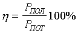
При больших амплитудах сигналов из-за нелинейности характеристик усилительных элементов возникают нелинейные искажения. Поэтому в практике используют понятие номинальной выходной мощности — максимальной мощности при искажениях, не превышающих допустимое значение. Степень нелинейных искажений усилителя оценивают величиной коэффициента гармоник:
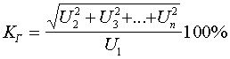
где U2, U3, Un — действующие значения напряжений гармоник, возникших в результате нелинейного усиления; U1 — действующее напряжение первой гармоники.
Общая величина коэффициента гармоник многокаскадного усилителя зависит от нелинейных искажений, вносимых отдельными каскадами, и определяется по формуле
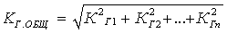
В электросвязи нелинейность усилителей принято оценивать затуханием нелинейности А в неперах:
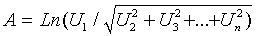
Наличие в усилителях реактивных элементов (емкостей и индуктивностей) приводит к возникновению частотных искажений и не позволяет получить постоянный коэффициент усиления в широкой полосе частот. Примерный вид АЧХ усилителя показан на рис. 3.2, а.
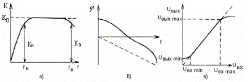
Рисунок 2.2.
Степень искажений на отдельных частотах оценивается коэффициентом частотных искажений КЧ, равным отношению коэффициента усиления К0 на средней частоте f0 к коэффициенту усиления Кf на данной частоте f:
KЧ = К0/Кf.
Обычно наибольшие частотные искажения возникают на границах диапазона рабочих частот: нижней fн и верхней fв. Коэффициенты частотных искажений в этом случае МН = К0/КН, МB = К0/КВ. Коэффициент частотных искажений многокаскадного усилителя равен произведению коэффициентов частотных искажений отдельных каскадов:
М = М1М2...Мn (раз).
Обычно коэффициент частотных искажений выражают в децибелах М(ДБ) = 20LgМраз = М1 + М2 + ... +Мn.
Частотные искажения в усилителе сопровождаются появлением сдвига фаз между входным и выходным напряжениями, что приводит к фазовым искажениям. Фазовые искажения, вносимые усилителем, оцениваются по его фазочастотной характеристике (рис. 2.2,б). Фазовые искажения в усилителе отсутствуют, когда фазовый сдвиг линейно зависит от частоты.
Идеальная АЧХ представляет собой прямую, параллельную оси частот (штриховая линия на рис. 2.2, а).
Идеальная фазочастотная характеристика (ФЧХ) — прямая, начинающаяся из начала координат (штриховая линия на рис. 2.2, б). Идеальная амплитудная характеристика усилителя показана штриховой линией на рис. 2.2, в. В реальных усилителях наблюдаются отклонения от идеальной характеристики при слабых и больших входных сигналах. В первом случае это объясняется наличием собственных шумов усилителя, во втором — ограниченностью линейного участка характеристик усилительных каскадов (обычно последнего).
Отношение амплитуд наиболее сильного и наиболее слабого сигнала на входе усилителя называют его динамическим диапазоном D:
D = 20 lg (UВХ max / UВХ min).
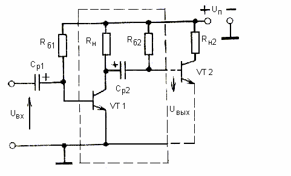
Рисунок 2.3.
В качестве базового узла предварительных усилителей наиболее широко применяется усилительный каскад на БТ, включенный по схеме с общим эмиттером. Простейшая схема такого каскада приведена на рис. 2.3, а графики, поясняющие его работу, — на рис. 2.4. Для получения наименьших нелинейных искажений усиливаемого сигнала рабочую точку А выбирают посередине рабочего участка характеристик (участок ВС на рис. 2.4, б). Выбранный режим обеспечивается требуемой величиной тока базы IБА, задаваемого резистором RБ. Сопротивление резистора RБ рассчитывается по формуле
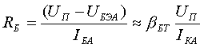
Здесь UБЭА, IКА, IБА — напряжение и соответствующие токи в рабочей точке А.
При подаче на вход транзистора напряжения сигнала uвх происходит изменение тока базы, а следовательно, и изменение тока коллектора iк и напряжения на сопротивлении нагрузки RH.
Амплитуда выходного тока Iкм примерно в (bБТ раз больше амплитуды базового тока IБТ, а амплитуда коллекторного напряжения UКm во много раз больше амплитуды входного напряжения: UКm>>UВХm=UБЭm. Таким образом, каскад усиливает ток и напряжение входного сигнала, что иллюстрирует рис. 2.4, а и б.
Пользуясь графиками, приведенными а этих рисунках, нетрудно определить основные параметры каскада:
входное сопротивление
RВХ = UБЭm / IБm.
коэффициент усиления по току
Кi = Iкm / IБm.
коэффициент усиления по напряжению
Кu = UКm / UБЭm.
коэффициент усиления по мощности
КР = КuКi.
Обычно каскады предварительных усилителей работают в режиме усиления слабых сигналов (постоянные составляющие тока базы и коллектора существенно превосходят аналогичные переменные составляющие). Эта особенность позволяет использовать аналитические методы расчета параметров каскадов по известным Н-параметрам транзистора.
Для определения параметров предварительного усилителя на БТ аналитическим методом воспользуемся моделью, приведенной на рис. 3.5, д. Предположим вещественный характер Н-параметров, что справедливо в области низких частот. Здесь усилитель представлен четырехполюсником, описываемым системой уравнений, где
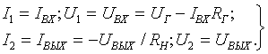
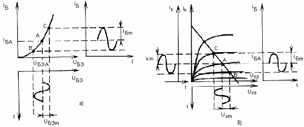
Рисунок 2.4.
Решая совместно системы уравнений, получаем формулы для расчета основных параметров усилителя, пригодные для любой схемы включения транзистора:
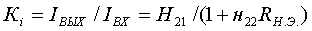
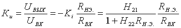
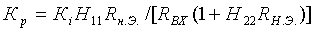
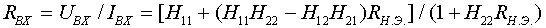
Анализ полученных уравнений показывает, что все параметры усилителей на БТ существенно зависят от сопротивления RH.Э.. В каскадах усилителей (см., в частности, рис. 2.3) под RH.Э. понимается эквивалентное сопротивление нагрузки каскада, образованное параллельным включением сопротивлений RH и входного сопротивления следующего каскада RВХ.СЛ. При определенном сопротивлении нагрузки, называемом оптимальным, наблюдается максимальное усиление мощности входного сигнала:
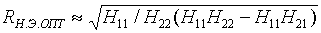
Однако
обычно в предварительных усилителях не ставится условие получения
максимального усиления мощности входного сигнала и выполняется неравенство
RH.Э.<<RH.Э.ОПТ. С учетом этого можно использовать упрощенные
формулы для расчета параметров каскада предварительного усилителя:
RВХ»H11; Кi»H21; 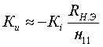 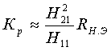
Приведенные выше параметры получены без учета влияния реактивных элементов схемы. Это справедливо для области средних частот (см. рис. 2.2, а), где коэффициенты усиления по току, напряжению и мощности не зависят от частоты.
На входе и выходе предварительного усилителя (рис. 2.3 и 2.5, б) используются элементы межкаскадной связи: разделительные конденсаторы Ср1 и Ср2. Разделительный конденсатор Ср1 обеспечивает гальваническую развязку источника сигнала и входа транзистора, а конденсатор Ср2 препятствует попаданию постоянной составляющей тока коллектора на вход следующего каскада. Для получения больших значений коэффициента усиления используют последовательное соединение однотипных каскадов, выделенных на рис. 2.3 штриховой линией. Модели предварительного усилителя с учетом реактивных элементов приведены на рис. 2.5, б — д.
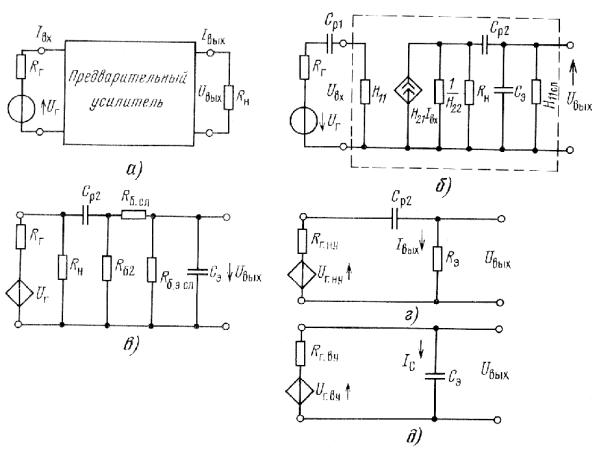
Рисунок 2.5.
Наличие в усилителях емкостей межкаскадной связи приводит к частотным искажениям усиливаемых сигналов в области нижних частот. Это нетрудно объяснить, рассматривая модели усилителя с генератором тока (рис. 2.5, б) или с эквивалентным генератором напряжения (рис. 2.5, в).
В усилителе на транзисторе,
включенном по схеме с общим эмиттером, роль Rr выполняет динамическое сопротивление «коллектор
— база» RK6,
а напряжение генератора определяется выражением 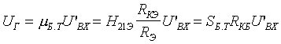
На низких частотах увеличивается падение напряжения сигнала на емкости разделительного конденсатора и, следовательно, снижается выходное напряжение каскада. Это приводит к уменьшению коэффициента усиления с понижением частоты. Как видно из модели на рис. 2.5, в, функцию внешней нагрузки рассматриваемого предварительного усилителя выполняет эквивалентное входное сопротивление следующего каскада: RЭ = R62 (Rб сл + Rбэ СЛ)/(R62 + Rб СЛ + R53 СЛ), где Rб2 — сопротивление, обеспечивающее требуемый ток базы в исходном режиме следующего транзистора; R6 сл — сопротивление базы следующего транзистора; Rбэ СЛ — сопротивление эмиттерного перехода следующего транзистора.
Для облегчения анализа низкочастотных свойств предварительного усилителя полную модель (рис. 2.5, в) преобразуют в упрощенную модель, изображенную на рис. 2.5, г. Здесь усилительные свойства биполярного транзистора учтены эквивалентным генератором напряжения с UГ.НЧ и внутренним сопротивлением RГ.Н.Ч:
UГ.НЧ=UГRН/(RГ+RН), RГ.НЧ=RГRН/(RГ+RН).
Выходное напряжение усилителя в области нижних частот, как видно из рис. 3.5, г, определяется выражением
ВЫХ.НЧ=
ВЫХRЭ=UГ.НЧ / (RГ.НЧ
- j 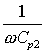
В области средних частот сопротивление емкости Ср2 становится пренебрежимо малым и выходное напряжение определяется выражением
UВЫХ.СР=UГ,НЧRЭ / (RГ.НЧ+RЭ).
Отношение напряжения Uвых.нч к напряжению позволяет определить в комплексной форме относительное усиление каскада в области нижних частот:
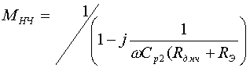
Величину Ср2 (RГ.НЧ + RЭ) называют постоянной времени каскада на нижних частотах и обозначают tНЧ. Модуль выражения является уравнением нормированной АЧХ каскада в области нижних частот, а величина, обратная модулю, показывает зависимость коэффициента частотных искажений от частоты:
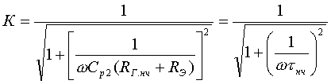
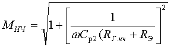
Отношение множителя при мнимой части выражения к его действительной части позволяет определить tgj, необходимый для расчета фазочастотной характеристики каскада:
j = arctg[l/(wtHЧ)] = arctg[l/(wCp2(RГ.НЧ + RЭ)].
При изменении частоты от нуля до бесконечности, угол сдвига фазы между выходным и входным напряжениями меняется от +90° до нуля.
Для определения импульсной характеристики каскада в области больших времен выражение запишем в операторной форме: К(p)=ptНЧ/(1+ptНЧ). Этому изображению соответствует оригинал, представляющий импульсную характеристику усилителя:
К(f) = exp(-t/ tНЧ).
Полученные выше расчетные формулы пригодны и для предварительных усилителей на полевых транзисторах, если принять в качестве Uг = mПТUвх, а в качестве RЭ.НЧ сопротивление утечки, включенное между затвором и истоком. В усилителях на биполярных транзисторах вследствие малых значений сопротивления RЭ.НЧ для получения требуемых значений tНЧ и, следовательно, небольших частотных искажений в области нижних частот приходится использовать электролитические конденсаторы большой емкости. Этого недостатка лишены усилители на полевых транзисторах. Вследствие высокого входного сопротивления в каскадах с полевыми транзисторами нетрудно обеспечить требуемые tН.Ч при использовании разделительных конденсаторов малой емкости.
Наличие в усилителях междуэлектродных емкостей транзисторов и монтажных емкостей приводит к возникновению частотных искажений усиливаемых сигналов в области верхних частот. Для анализа высокочастотных свойств предварительного усилителя полную модель (см. рис. 2.5, а) преобразуют в упрощенную модель, приведенную на рис. 2.5, д.
Здесь усилительные свойства биполярного транзистора учтены генератором напряжения с внутренним сопротивлением, определяемым выражением
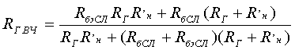
где R'Н = RHR62/(RH + Rб2). В предварительных усилителях обычно RГ>>R'H. Поэтому в дальнейшем можно использовать выражение в упрощенном виде RГ.ВЧ»RбэСЛ(RбСЛ+R’Н)/(RбэСЛ+RбСЛ+R’Н).
В высокочастотной
модели каскада предварительного усиления междуэлектродные и монтажные
емкости учтены в виде нагружающей каскад эквивалентной емкости
СЭ = СВЫХ + СМ + СВХ
сл, где Свых — выходная емкость транзистора
рассматриваемого каскада; См — монтажная емкость; Свх
сл — входная емкость следующего каскада. Наибольший вклад
в Сэ вносит емкость Свх сл. Эта
емкость определяется выражением Свх. сл =
Сбэ + Ск 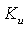
Эффект увеличения коллекторной емкости объясняется тем, что через нее протекает ток, пропорциональный разности потенциалов между базой и коллектором следующего каскада.
Выходное напряжение каскада в области верхних частот согласно модели рис. 2.5, д определяется по формуле
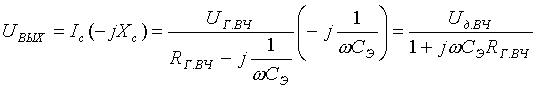
Величину
CэRГ.ВЧ называют постоянной времени каскада в области верхних частот
и обозначают tВЧ. На средних частотах wСэRГ.ВЧ<<1
и, следовательно, 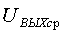 Г.ВЧ.
Нормированный коэффициент усиления в области верхних частот в комплексной
форме определяется выражением
Г.ВЧ.
Нормированный коэффициент усиления в области верхних частот в комплексной
форме определяется выражением
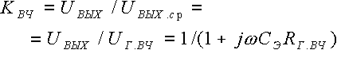
Модуль выражения представляет собой уравнение нормированной АЧХ каскада в области верхних частот, а обратная ему величина характеризует зависимость коэффициента частотных искажений от частоты
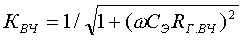
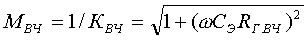
Аргумент выражения представляет собой фазочастотную характеристику в области верхних частот j = arctg(wCЭRГ.ВЧ). Отрицательное значение угла сдвига фазы свидетельствует об отставании выходного напряжения от входного на верхних частотах (при w ® ¥, j ® -90°).
Для определения импульсной характеристики каскада в области малых времен запишем выражение в операторной форме: КВЧ(р)= 1/(1+ptВЧ). Этому изображению соответствует оригинал, представляющий нормированную импульсную характеристику в области малых времен:
КВЧ(t)=1-exp(-t/tВЧ).
Выражения позволяют рассчитать нормированные характеристики каскадов предварительного усиления, необходимые для анализа свойств усилителей.
Модель, изображенная на рис.
2.5, д, пригодна для анализа усилителей на полевых транзисторах.
В последних также наибольший вклад в Сэ вносит входная
динамическая емкость. Однако если у биполярных транзисторов наибольшее
влияние оказывает входная емкость (емкость перехода «база — эмиттер»),
то в случае полевых транзисторов преобладающее влияние оказывает
динамическая проходная емкость «затвор — сток»: Сзс.
ДИН = СЗС(1+ 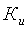
Рассмотренный каскад предварительного усиления (см. рис. 2.3) отличается простотой и малым потреблением тока от источника питания. Однако он имеет существенный недостаток: режим работы сильно зависит от температуры окружающей среды и нарушается при смене транзистора, а также с течением времени. В той или иной степени избежать этого недостатка позволяют каскады усиления со стабилизацией режима, схемы которых приведены на рис. 2.6.
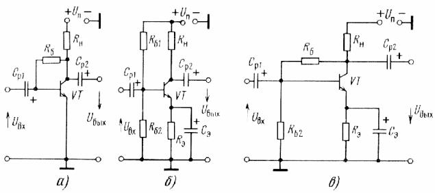
Рисунок 2.6.
В схеме на рис. 2.6, а стабилизация режима достигается включением резистора между базой и коллектором. При этом транзистор оказывается охваченным параллельной ООС по напряжению. Это приводит к уменьшению входного и выходного сопротивлений, а также к стабилизации режима. Такой способ получил название коллекторной стабилизации. Каскады с коллекторной стабилизацией сохраняют нормальную работу при перепадах температуры до 30° С и изменении bБТ транзисторов до двух раз.
В схеме рис. 2.6, б, получившей название схемы эмиттерной стабилизации, используется последовательная ООС по постоянному току. Она достигается включением резистора в цепь эмиттера транзистора. Для того чтобы избежать уменьшения коэффициента усиления полезного сигнала резистор RЭ шунтируется конденсатором СЭ. Этот конденсатор имеет малое сопротивление в диапазоне рабочих частот полезного сигнала и, следовательно, ООС по переменному току, таким образом, устраняется. Эффективность работы такой схемы стабилизации тем лучше, чем высокоомнее сопротивление Кэ, так как в этом случае больше глубина ООС. При эмиттерной стабилизации каскад сохраняет нормальную работу при перепадах температуры порядка 70° С и изменении bБТ транзисторов в 5 раз.
На рис. 2.6, в приведена схема комбинированной стабилизации режима. Она обеспечивает наилучшую стабильность режима, так как, по сути, является объединением схемы коллекторной и эмиттерной стабилизации. При этом транзистор оказывается охваченным комбинированной ООС как по напряжению, так и по току.
В предварительных усилителях могут использоваться ПТ в трех схемах включения с общим истоком, общим затвором и общим стоком. Усилительные каскады с общим затвором обладают низким входным сопротивлением, не имеют преимуществ по сравнению с каскадами на БТ и вследствие этого используются редко.
Усилительные каскады с общими истоком и стоком обладают значительно большим входным сопротивлением по сравнению с усилительными каскадами на БТ. Наилучшими усилительными свойствами обладают каскады усиления на ПТ, включенные по схеме с общим истоком. Схема такого каскада приведена на рис. 2.7. Здесь в качестве усилительного элемента используется ПТ с p-n переходом и каналом n-типа. Усиленный входной сигнал выделяется в нагрузке RН, включенной в цепь стока. В цепь истока включен резистор RИ. В режиме покоя через резистор RИ протекает ток стока и создает на нем падение напряжения, являющееся напряжением смещения между затвором и истоком. Напряжение смещения необходимо для установки требуемого режима работы усилительного каскада. В цепь затвора включен резистор R3, обеспечивающий гальваническую связь затвора с общим проводом. Посредством этого резистора напряжение смещения прикладывается ко входу транзистора: участку «затвор — исток». В рассматриваемом каскаде ко входному p-n переходу «затвор —исток» прикладывается запирающее напряжение смещения с резистора RИ. Поэтому транзистор обладает чрезвычайно высоким входным сопротивлением постоянному току. Практически оно определяется выбором сопротивления резистора R3, которое может составлять 105 ... 107 Ом, что существенно превышает входное сопротивление каскадов усиления на БТ.
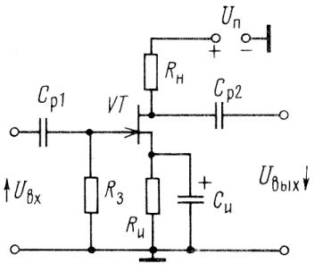
Рисунок 2.7.
Для исключения влияния постоянных напряжений источника сигнала и следующего каскада на режим работы рассматриваемого каскада используются разделительные конденсаторы Ср1 и Ср2. При подаче переменного входного напряжения в цепи канала появляется переменный ток стока, равный току истока (так как ток затвора практически равен нулю). За счет падения напряжения на резисторе RИ от переменной составляющей тока истока переменная составляющая напряжения uЗИ, усиливаемая транзистором, уменьшается: uЗИ = uЗИ-iИRИ. Следовательно, здесь наблюдается явление ООС, приводящее к уменьшению коэффициента усиления каскада. Для устранения ООС параллельно RH включают конденсатор СИ, емкостное сопротивление которого на самой низкой частоте усиливаемого напряжения должно быть гораздо меньше сопротивления резистора RИ.
Принцип действия усилительного каскада на ПТ поясняется графиками, приведенными на рис. 2.8. В каскаде предварительного усиления исходную рабочую точку А выбирают посередине рабочего участка на семействе выходных характеристик или динамической передаточной характеристики (рис. 2.9). Выбрав положение рабочей точки А, определяют сопротивление резистора RИ: RИ=UЗИ А/IС А.
При подаче на вход транзистора напряжения сигнала uвх происходит изменение тока стока, а следовательно, и выходного напряжения на нагрузке RH: uСИ = iСRH.
Основным параметром схемы является коэффициент усиления напряжения, который определяют как отношение действующих или амплитудных значений выходного и входного напряжений: Кu=UВЫХ/UВХ=UСИ/UЗИ. Его можно также определить, анализируя эквивалентную схему каскада. Принципиальные схемы каскадов предварительных усилителей на БТ (см. рис. 2.3) и ПТ (см. рис. 2.7) имеют сходство. Это позволяет при рассмотрении свойств каскада предварительного усилителя на ПТ пользоваться упрощенной моделью, приведенной на рис. 2.5, в, учитывая специфические параметры ПТ: крутизну SПТ и дифференциальное выходное сопротивление Ri.
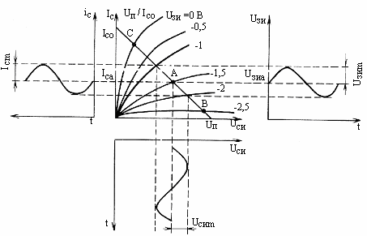
Рисунок 2.8.
На средних частотах влиянием Сэ и Ср2 можно пренебречь. Тогда выходное переменное напряжение можно рассчитать по формуле
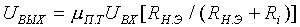
где RН.Э = RНRвх сл/(RН + RВХ.СЛ) — эквивалентное сопротивление нагрузки каскада переменному току. Учитывая, что mП.Т = SП.ТRi, найдем
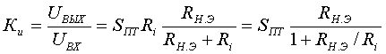
где SПТ — крутизна транзистора в рабочей точке.
При работе каскада с сопротивлением нагрузки существенно меньшим входного сопротивления следующего каскада RВХ.СЛ и внутреннего сопротивления транзистора, формула для расчета коэффициента усиления может быть записана в упрощенном виде:
Кu»SПТRН.
Идентичность моделей каскадов предварительного усиления на БТ и ПТ позволяет использовать выражения для анализа свойств предварительных усилителей на ПТ. Сравнивая свойства каскадов предварительного усиления на БТ и ПТ, можно отметить следующее: каскады на БТ, как правило, обладают большими значениями Кu, так как у маломощных приборов SБТ>>SПТ.
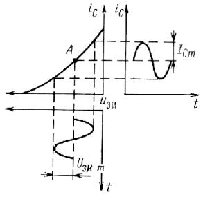
Рисунок 2.9.
2.3. Интегральные операционные усилители
Операционным (ОУ) называют усилитель с большим коэффициентом усиления с двумя высокоомными входами и одним низкоомным выходом, предназначенный для построения разнообразных узлов электронной аппаратуры. Первые ОУ появились до разработки интегральных микросхем. Они были выполнены на электронных лампах и впервые использовались в узлах аналоговых ЭВМ, реализующих различные математические операции: суммирование, вычитание, дифференцирование, интегрирование и др. В настоящее время на основе ОУ выполняют более 200 функциональных узлов электронной аппаратуры.
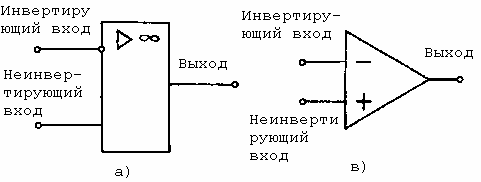
Рисунок 2.15
Согласно ГОСТ 2.759—82 для ОУ введено графическое обозначение, показанное на рис. 2.15, а. Ранее в технической литературе широко использовались обозначение, приведенное на рис. 2.15, б.
Основными характеристиками ОУ являются амплитудная (АХ) (рис. 2.16, а) и амплитудно-частотная (АЧХ) (рис. 2.16, б).
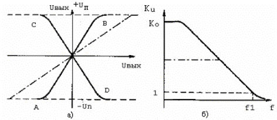
Рисунок 2.16
При подаче сигнала на неинвертирующий вход АХ имеет вид кривой АВ (рис. 2.16, а), а при подаче сигнала на инвертирующий вход — вид кривой CD. Линейный участок АХ сверху и снизу практически ограничен напряжениями источников питания положительной и отрицательной полярностей. Коэффициент усиления постоянного тока и очень низких частот современных ОУ достигает 104 … 106, а частота единичного усиления — 15*106 Гц. Наличие у ОУ инвертирующего входа позволяет охватывать его отрицательной обратной связью (ООС) и реализовывать требуемые АХ и АЧХ (например, показанные на рис. 2.16 штриховыми линиями).
Важным достоинством функциональных узлов на основе ОУ с глубокой ООС является возможность обеспечения высоких технических показателей, практически не зависящих от параметров элементов, из которых состоит ОУ. В принципе, ОУ можно рассматривать как перспективный тип активного прибора универсального назначения, который с успехом может заменить электронные лампы и транзисторы в ряде функциональных узлов электронной аппаратуры.
На практике ОУ обычно используются с цепями обратной связи. Отрицательная ОС широко используется в усилителях на основе ОУ. Вариант для реализации усилителя показан на рис. 2.17.
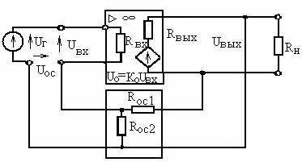
Рисунок 2.17
Здесь ООС задается резисторами RОС1 и RОС2. Коэффициент передачи четырехполюсника ОС определяется по формуле
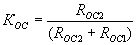
Этот коэффициент называют коэффициентом ООС. Он может принимать значения в пределах 0 ... 1. Без учета реактивных элементов ОУ выражение для расчета КООС принимает вид:
КООС=КО/(1+КОСКО)=КО/А (2.25)
где К0 — коэффициент усиления ОУ без ООС, А=1+КОСКО глубина ООС. В практических случаях КОСКО>>1. Пренебрегая единицей, видим, что КООС обратно пропорционален КОС:
КООС»1/КОС=(RОС1+RОС2)/RОС1.
Как видно из этой формулы, коэффициент усиления ОУ с ООС практически не зависит от К0, а определяется внешними элементами: резисторами RОС1 и RОС2, которые могут быть выбраны достаточно точными и стабильными. Усилитель, у которого коэффициент передачи задается внешними резисторами, получил название масштабного.
При использовании ООС в А раз уменьшается коэффициент усиления ОУ. Важными преимуществами ОУ с ООС являются: уменьшение в А раз частотных и нелинейных искажений, вносимых ОУ, а также выходного сопротивления ОУ. Как показано на рис. 2.16, при ООС существенно расширяется диапазон входных сигналов, для которых соблюдается линейность АХ и АЧХ. Указанные свойства определяют широкое применение ОУ с ООС.
Если подавать иОС в фазе с напряжением генератора входного сигнала иГ (т. е. подключать выход четырехполюсника КОС к неинвертирующему входу), то ОУ оказывается охваченным ПОС. В формуле для расчета KОС это отражается как изменение знака у KОС:
КПОС=КО/(1-КОСКО). (2.27)
Из этой формулы видно, что ПОС способствует увеличению коэффициента усиления ОУ по сравнению с К0. Однако введение ПОС в усилителе сопровождается ухудшением стабильности (устойчивости) его режима, увеличением частотных и нелинейных искажений, уменьшением динамического диапазона уровней усиливаемых сигналов. Поэтому ПОС в усилителях используется редко.
При глубокой ПОС, если КОСК0>1, происходит самовозбуждение ОУ. Это явление, как полезное, широко используется в автогенераторах.
Более полное представление о свойствах ОУ с ОС дают модели с учетом реактивных элементов схем (в первую очередь между электродных и монтажных емкостей). При этом все параметры в приведенных выше формулах (2.1 ... 2.4) представляются в комплексной форме.
Первые типы интегральных ОУ были разработаны в начале 60-х годов и содержали три каскада усиления напряжения и выходной эмиттерный повторитель (ЭП). Структурная схема указанных ОУ показана на рис. 2.4, а.
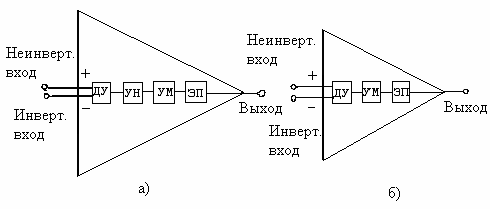
Рисунок 2.18
В литературе ОУ, выполненные по такой структурной схеме, получили название трехкаскадных. Название объясняется числом каскадов усиления напряжения. Как правило, здесь и в других типах ОУ на входе используется дифференциальный каскад усиления (ДУ). Выход ДУ подключен к каскаду усиления напряжения (УН). Между УН и ЭП включен усилитель мощности (УМ) со схемой сдвига уровней. Схема сдвига уровней широко используется в ОУ для обеспечения нулевого постоянного напряжения в нагрузке при отсутствии входного сигнала.
Операционные усилители первого поколения обычно содержали три каскада усиления напряжения на основе n-p-n-транзисторов. Они имели сравнительно малое входное сопротивление и коэффициент усиления. На высоких частотах трехкаскадные ОУ вносят большие фазовые сдвиги и склонны к самовозбуждению. В качестве нагрузок в каскадах таких ОУ использовались резисторы. К трехкаскадным усилителям первого поколения относятся ОУ типов К140УД1 и К140УД5.
Широкое применение в настоящее время находят двухкаскадные ОУ (рис. 2.18, б). Отличительной особенностью таких ОУ является совмещение функций усиления напряжения и мощности в одном каскаде УМ. Переход к двухкаскадным схемам стал возможным благодаря применению в них биполярных транзисторов (БТ) с большими значениями коэффициента усиления по току, работающих на динамические нагрузки. Динамические нагрузки представляют собой генераторы тока на основе транзисторов и обеспечивают высокие значения сопротивлений переменному току.
Операционные усилители второго поколения обычно содержат биполярные транзисторы n-p-n- и p-n-p-типов. В некоторых типах с целью реализации высокого входного сопротивления на входах в ДУ используются полевые транзисторы (ПТ). Существенной отличительной особенностью современных двухкаскадных ОУ является широкое применение в них динамических нагрузок.
Необходимость в ОУ, обладающих одновременно высоким входным сопротивлением, большим коэффициентом усиления напряжения и повышенным быстродействием, привела к разработке ОУ третьего поколения. Особенность этих ОУ заключается в применении БТ со сверхбольшими значениями коэффициента усиления по току (bБТ=103...104). Такие транзисторы имеют сверхтонкую базовую область и называются транзисторами супер-b.
К усилителям третьего поколения относят ОУ типа К140УД6 и К140УД14.
Четвертое поколение объединяет ОУ, имеющие рекордные значения отдельных параметров. Такие ОУ начали разрабатывать с 1974 г. Они получили также название специализированных. К ним можно отнести, например, ОУ типа К153УД5 с очень большим значением коэффициента усиления по напряжению (более 106 раз), К154УД2 с высокой скоростью нарастания выходного напряжения (более 75 В/мкс) и К140УД12 с малым током потребления (менее 0,2 мА).
Питание ОУ обычно осуществляется от двух разнополярных источников питания. Для большинства современных ОУ напряжения питания можно менять в широких пределах ± (3...15) В, что позволяет создавать как экономичные устройства, так и устройства с большой амплитудой выходного сигнала.
Рассмотрим технические решения основных типов функциональных узлов ОУ. Важнейшим узлом является дифференциальный каскад усиления. Простейшие схемы ДУ, выполненные на основе БТ и ПТ, приведены на рис. 2.19. а и б соответственно.
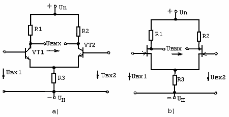
Рисунок 2.19
Дифференциальным каскадом усиления называют функциональный узел, усиливающий разность двух напряжений (дифференциальное напряжение). В идеальном случае (когда R1=R2 идентичны характеристики VT1 и VT2) выходное напряжение ДУ пропорционально только разности напряжений, приложенных к двум его выходам, и не зависит от их абсолютных значений: UВЫХ=КД(UВХ1-UВХ2), где KД—коэффициент усиления разности входных напряжений.
Реальный ДУ не обладает идеальной симметрией, в результате чего выходное напряжение зависит не только от разности, но и от суммы входных сигналов. При этом половина этой суммы (Uвх1+Uвх2)/2 называется синфазным сигналом. Выходное напряжение реального ДУ Uвых=Кд(Uвх1-Uвх2)+Кс(Uвх1+Uвх2)/2, где КС— комплексный коэффициент передачи синфазного сигнала. Качество ДУ оценивается коэффициентом ослабления синфазного сигнала Косс=Кд/Кс. У реальных ДУ КОСС =103...105.
Для реализации ДУ с большими значениями КД в качестве R1 и R2 целесообразно использовать динамические нагрузки. Для реализации ДУ с малыми значениями КД необходима высокая степень симметрии плеч и глубокая местная ООС для синфазного сигнала. Это достигается включением динамической нагрузки вместо резистора R3.
Роль динамических нагрузок в ОУ выполняют генераторы тока на основе БТ и ПТ, показанные на рис. 2.20, а и б соответственно.
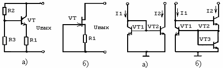
Рисунок 2.20 Рисунок 2.21
Здесь высокие динамические сопротивления достигаются благодаря использованию свойств ООС по току. Динамическое сопротивление генератора тока на основе БТ рассчитывается по формуле
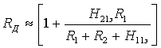
Динамическое сопротивление генератора тока на основе ПТ рассчитывается по формуле RД=RСИ (1+SПТ R1), где RСИ — динамическое сопротивление ПТ без ООС (сопротивление участка сток-исток переменному току), SПТ — крутизна ПТ в рабочей точке. Значение динамических сопротивлений RД, реализуемых схемами на рис. 2.20, на один-два порядка превосходят допустимые значения сопротивлений резисторов в схемах ДУ, приведенных на рис. 2.19. Для реализации очень больших значений RД необходимы высокоомные резисторы во входных цепях генераторов тока. Однако это нежелательно из-за существенного падения на них напряжения постоянного тока. Избежать применения резисторов и реализовать динамические сопротивления позволяют отражатели типа первого и второго родов, приведенные на рис. 2.21, а и б соответственно. Здесь выходные токи I1 с приемлемой для практики точностью повторяют входные токи I1. Такие узлы иногда называют «зеркалом» тока первого и второго родов соответственно.
Для отражателя тока первого рода справедливо
выражение для отражателя второго рода выходной ток с высокой точностью
повторяет входной ток: I2=I1[1-2( 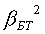
Схема узла сдвига уровней приведена на рис. 2.22.
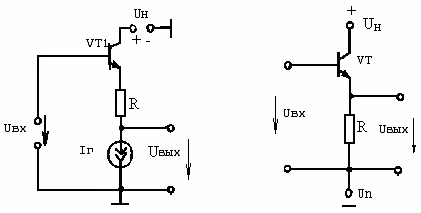
Рисунок 2.22 Рисунок 2.23
Принцип действия узла основан на выполнении следующих условий: а) для постоянного тока сопротивления R гораздо больше сопротивления генератора тока; б) для переменного тока, наоборот, сопротивление R гораздо меньше динамического сопротивления генератора тока. Таким образом, при отсутствии переменного напряжения на входе на резисторе R выделяется основная часть постоянного напряжения и только незначительная часть его поступает на выход. При появлении переменного напряжения узел работает как повторитель напряжения с коэффициентом передачи, близким к единице.
На входе ОУ обычно применяют эмиттерные повторители с целью обеспечения низкого выходного сопротивления. Простейший эмиттерный повторитель изображен на рис. 2.23. Выходное сопротивление этого функционального узла будет тем меньше, чем выше сопротивление резистора R. Для улучшения показателей ЭП в нем вместо R целесообразно также использовать динамическую нагрузку. Следует отметить, что выходной каскад потребляет основную мощность от источников питания. С целью улучшения энергетических показателей в ОУ часто применяют сложные эмиттерные повторители на транзисторах, работающих в одном из экономичных режимов (АВ, В).
При использовании высококачественных ОУ свойства функциональных узлов зависят от параметров внешних цепей, подключенных к ОУ, и практически не зависят от параметров элементов внутри ОУ. Эта особенность позволяет при проектировании, устройств на ОУ пользоваться упрощенными моделями — макромоделями.
Возможные случаи применения ОУ охватывает обобщенная макромодель применений ОУ, приведенная на рис. 2.24.
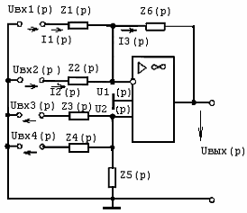
Рисунок 2.24.
Здесь к ОУ подключены элементы Z1(p)... Z6(p). На практике в качестве Z1(p)... Z6(p) используются элементы R, С, L, D и др. Электрические свойства приведенной макромодели могут быть описаны системой уравнений Кирхгофа, представленных в операторной форме:
Uвх1(р)=I1(p)z1(p)=U1(p);
Uвх2(р)-I2(p)z2(p)=U1(p);
I1(p)+I2(p)=I3(p);
Uвх1(р)-I1(p)z1(p)-I3(p)z6(p)=Uвых(p);
Uвх2(р)-I2(p)z2(p)-I3(p)z6(p)=Uвых(p);
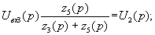
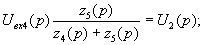
где
Последнее уравнение представляет собой обобщенную запись характеристики прямой передачи функциональных узлов на основе ОУ.
Использование рассмотренной макромодели позволяет простым образом синтезировать усилители, узлы, выполняющие разнообразные математические операции, импульсные и нелинейные устройства.
Возможности построения усилителей на основе ИС рассмотрим, используя обобщенную макромодель применений ОУ.
Если в обобщенной макромодели выполнить условия Zl(p)=Rl, Z2(p)=¥; Z3(р)=¥, Z4(р)=¥, Z5(p)=R5, Z6(p)=R6, то реализуется модель устройства (рис. 2.15, а), характеристика прямой передачи которого в операторной форме описывается выражением
.
Рисунок 2.25.
Используя свойство линейного преобразования Лапласа, запишем выражение в виде . Из этого выражения следует, что реализован усилитель, у которого коэффициент усиления по напряжению задается двумя резисторами — R6 и R1: К = - R6 / R1. Знак «минус» в формуле означает, что фаза выходного напряжения отличается от входного (инвертируется) на 180°. Отношение сопротивлений задает коэффициент усиления (масштаб). Поэтому такой усилитель получил название инвертирующего масштабного усилителя. Резисторы R1 и R6 образуют цепь параллельной ООС по напряжению. При этом в раз уменьшаются входное и выходное сопротивление ОУ, повышается стабильность режима, уменьшаются частотные и нелинейные искажения.
Если в обобщенной микромодели выполнить условия Z1(p)=R1, Z2(p)=¥, Z3(p)=R3, Z4(p)=¥, Z5(p)=R5, Z6(p)=R6, то реализуется неинвертирующий усилитель (рис. 2.25, б), характеристика прямой передачи которого описывается выражением
.
Если R3=0, то и в этом усилителе коэффициент усиления напряжения определяется выбором элементов цепи ООС:
Кu=l+R6/R1.
Если в обобщенной макромодели выполнить условия Z1(p)=R1; Z2(p)=, Z,(p) = R3, Z4(р)=¥, Z5(p)=R5, Z6(p)=R6, то реализуется вычитатель. Модель приобретает вид рис. 2.25, в и описывается характеристикой прямой передачи
.
2.4. Электронные регуляторы и аналоговые ключи
В
электронных устройствах часто возникает необходимость в регулировках
коэффициента передачи, частоты и других параметров. В качестве
регулируемых элементов широкое применение находят полупроводниковые
приборы: диоды, биполярные и полевые транзисторы, а также интегральные
микросхемы. Схемы базовых функциональных узлов электронных регуляторов
приведены на рис. 2.26.
Рисунок 2.26.
В схеме рис. 2.26, а диоды VDl и VD2 используются в качестве сопротивлений, управляемых прямым током. Этому устройству свойственны существенные недостатки: отсутствие развязки цепей управления и сигнала; значительная мощность, потребляемая цепью управления; существенные нелинейные искажения при малых коэффициентах передачи.
Регулятор на БТ, изображенный на рис. 2.26, б, по свойствам напоминает регулятор на диодах. Это объясняется тем, что, по сути, у транзистора переход «база — эмиттер» выполняет функцию диода VD1, а переход «база — коллектор» — функцию диода VD2.
Лучшими свойствами обладает регулятор на основе ПТ, изображенной на рис. 2.26, в. Здесь ПТ используется в качестве управляемого сопротивления. Цепь управления практически не потребляет мощность, так как транзистор обладает чрезвычайно большим сопротивлением по управляющему входу. Регулятор характеризуется хорошей развязкой цепей сигнала и управления. В цепи сигнала нет p-n переходов, а имеется омическое сопротивление, управляемое напряжением. Регулятор способен коммутировать сигналы с широким динамическим диапазоном с меньшими нелинейными искажениями, чем рассмотренные выше регуляторы.
Перспективным узлом для регуляторов являются интегральные схемы аналоговых перемножителей напряжения (рис. 2.26, г): реализующих передаточную функцию UBЫХ=KUВХ1UВХ2, где К — масштабный коэффициент. При использовании перемножителей в качестве регуляторов, один из входов, например UВХ1, является управляющим, а второй UВХ2, используется для подачи входного сигнала. Изменяя напряжение на управляющем входе, регулируют выходное напряжение UВЫХ, а, следовательно, и коэффициент передачи устройства. Современные перемножители имеют сложные технические решения, благодаря которым способны регулировать напряжения с амплитудой, достигающей 10 В с погрешностью, не превышающей 1%.
Рассмотренные регуляторы могут выполнять функции аналоговых ключей. При этом ключи рассматриваются как частные случаи регуляторов, работающих в двух режимах. В одном из них к управляющим входам прикладывается отпирающее напряжение. Коэффициент передачи принимает максимальное значение КИ = 1, и ключ пропускает аналоговый сигнал на выход. В другом — к управляющим входам прикладывается большое запирающее напряжение. Устройство имеет минимальный коэффициент передачи (Кu»0) и лишь малая доля входного сигнала из-за наличия в выходной цепи сопротивлений утечки, проходной и монтажных емкостей проходит на выход. Этот режим соответствует выключенному состоянию ключа.
2.5. Фильтры на интергральных схемах
В электронике широкое применение находят устройства частотной селекции сигналов, пропускающие сигналы в заданной полосе частот. В некоторых случаях используются устройства, не пропускающие сигналы в заданной полосе частот, получившие название режекторных. Здесь рассматриваются вопросы практической реализации активных фильтров на перспективной элементной базе — интегральных микросхемах. Интегральные схемы, специально разработанные для построения устройств частотной селекции фильтров, имеют в обозначении буквы СС.
Перспективными базовыми узлами для построения фильтров являются операционные усилители. Фильтры, сочетающие использование jRC-цепей и усилительных приборов, получили название активных. Обобщенная макромодель фильтра приведена на рис. 2.27. Вид АЧХ определяет частотно-селективная цепь, масштаб характеристики (коэффициент передачи в заданной полосе частот) обеспечивает усилитель с ООС. В некоторых фильтрах удается совместить частотно-селективную цепь с цепью ООС. Другими словами, использовать для реализации фильтра частотно-зависимую ООС.
Рисунок 2.27.
Возможности реализации фильтров на интегральных схемах удобно иллюстрировать на примерах использования ОУ. Данные о базовых функциональных узлах фильтров на основе ОУ и вид их АЧХ сведены в табл. 2.2.
Таблица 2.2.
| Тип фильтра |
Схема базового узла |
Вид АЧХ |
| Фильтр нижних частот |
|
|
| Фильтр верхних частот |
|
|
| Узкополосный LC-фильтр |
|
|
| Узкополосный RC-фильтр |
|
|
| Режектроный фильтр |
|
|
В рассматриваемых фильтрах используются такие достоинства ОУ, как высокое входное и низкое выходное сопротивления. Это представляет разработчику широкие возможности в выборе элементов, определяющих вид АЧХ, например в активных RC-фильтрах использовать дешевые высокоомные резисторы, дешевые и высокостабильные конденсаторы малой емкости.
Другими достоинствами ОУ, используемыми в фильтрах, являются два входа и возможность использования ООС и ПОС. Как видно из табл. 2.2, ООС используется во всех базовых функциональных узлах фильтра. Она обеспечивает стабильность режима работы ОУ и очень низкое выходное сопротивление каждого фильтра. Положительная обратная связь используется для повышения добротности фильтра. Так, в узкополосном LC-фильтре использование ПОС эквивалентно внесению в контур отрицательного сопротивления потерь. Таким образом, появляется возможность увеличения добротности контура выше значений, определяемых конструктивными особенностями контура. Глубина ПОС регулируется потенциометром R3 и ограничивается резистором R2, чтобы не произошло самовозбуждения устройства.
Активные фильтры нижних и верхних частот используют по два RС-звена, и поэтому относятся к фильтрам второго порядка. Рабочая полоса ограничивается частотой среза, на которой коэффициент передачи уменьшается на 3 дБ. Для повышения затухания вне рабочей полосы частот используют последовательное соединение однотипных базовых узлов. Для построения полосовых фильтров используют последовательное соединение разнотипных базовых узлов.
Узкополосный LC-фильтр представляет, по сути, разновидность инвертирующего масштабного усилителя с частотно-зависимой ООС. При отсутствии ПОС (R3 = 0) на частоте резонанса контур представляет собой высокоомное активное сопротивление и коэффициент передачи фильтра может быть рассчитан по формуле
.
При введении ПОС увеличивается значение Ки0 и сужается полоса пропускания фильтра: 2Df=Ки0/Q.
Избежать применения индуктивности в узкополосном фильтре (что особенно желательно в низкочастотных устройствах) позволяет использование двойного Т-образного моста. При точном подборе одноименных элементов моста в соотношениях, указанных на схеме узла с RC-фильтром в табл. 2.2, ослабление, обеспечиваемое мостом на частоте квазирезонатора fc=1/(2pRC), стремится к бесконечности, а фазовый сдвиг выходного напряжения по отношению ко входному стремится к нулю. Следовательно, по основным свойствам двойной Т-образный мост напоминает параллельный колебательный контур. Добротность такой частотно-селективной цепи можно уменьшить, подключив к ней резистор R. Выбором сопротивления ri можно добиться требуемой полосы пропускания фильтра. Указанные свойства двойного Т-образного моста используются в режекторном фильтре (см. табл. 2.2). На частоте режекции мост представляет собой очень большое сопротивление, и, следовательно, фильтр эффективно ослабляет эту частоту. Операционный усилитель выполняет здесь функцию высококачественного буферного усилителя, способствующего получению высокой добротости фильтра. В фильтре используется 100% ООС по напряжению. Поэтому максимальный коэффициент передачи вне полосы режекции не превышает единицы. Глубокая ООС обеспечивает высокую стабильность режима работы фильтра.
2.6. Автогенераторы на интегральных схемах
Автогенераторами называются устройства для генерации электрических колебаний требуемой формы, частоты и мощности за счет использования энергии источников питания. Они находят широкое применение в радиопередающих, радиоприемных и телевизионных устройствах, в измерительной технике, в системах многоканальной связи и др.
Как видно, автогенераторы реализуются на усилителях, охваченных цепями ПОС и ООС. В качестве цепей, задающих частоту генерации, используют частотно-селективные цепи (LC-контуры, RС-цепи и кварцы). Элементы, задающие частоту генерации, включаются в цепь либо ООС, либо ПОС.
В зависимости от формы генерируемых колебаний различают автогенераторы синусоидальных (гармонических) и импульсных сигналов. Ниже рассматриваются основные типы автогенераторов синусоидальных сигналов, реализованные на основе ОУ.
На рис. 2.28, а приведена схема LC-автогенератора. По виду она напоминает схему узкополосного LC-фильтра, однако здесь используется более глубокая ПОС. Баланс фаз обеспечивается наличием в устройстве положительной обратной связи, обеспечиваемой подключением резисторов R2, R3 между выходом и неинвертирующим входом ОУ. Баланс амплитуд достигается правильным выбором сопротивлений резисторов R2, R3, чтобы выполнялось условие .
Здесь под Кu подразумевается масштабный коэффициент усиления Кu = RЭ/R1, где RЭ — сопротивление контура на частоте резонанса. Частота генерации определяется элементами LC-контура и рассчитывается по известной формуле ( .
Для анализа свойств описанного генератора можно воспользоваться соотношениями, представив ОУ высококачественным эквивалентом транзистора с коэффициентом усиления Кu и дифференциальной крутизной SОУ.
Избежать применения индуктивностей, что важно в низкочастотных автогенераторах, позволяет применение селективных RС-цепей. Наибольшее применение в RС-автогенераторах получила так называемая полосовая фазирующая цепь, включенная между выходом и неинвертирующим входом ОУ. На частоте генерации ослабление, вносимое этой цепью A0»3,3, а фазовый сдвиг j0=0. Поэтому используемый способ подключения фазирующей цепи к ОУ обеспечивает выполнение баланса фаз.
Рисунок 2.28.
Для выполнения условия баланса амплитуд усилитель должен скомпенсировать затухание, вносимое фазирующей цепью на частоте генерации. Это просто достичь выбором элементов цепи ООС (резисторов R1 и R2) при условии R2/(Rl + R2) = KOOC = A0. Нетрудно также обеспечить неравенство Kоос»A0, что означает выполнение условия генерации одновременно для многих частот. В этом случае вместо генерации колебаний синусоидальной формы генерируется колебание сложной формы, близкое к прямоугольной. Для обеспечения высокой точности равенства KООС >> А0 схему генератора усложняют узлом автоматической регулировки усиления ОУ.
Если вместо резисторов R фазирующей RС-цепи использовать управляемые напряжением сопротивления, то реализуется генератор с электронной перестройкой частоты. Схема RС-автогенератора с электронной перестройкой частоты приведена на рис. 2.27, в. Здесь в качестве управляемых сопротивлений используется сдвоенный ПТ, у которого проводимость канала GK является линейной функцией управляющего напряжения: . Подставляя это выражение в формулу для расчета частоты генерации, получаем .
При изменении постоянного управляющего напряжения происходит электронная перестройка частоты. Если в качестве управляющего напряжения использовать низкочастотное колебание, то по закону изменения амплитуды этого колебания будет изменяться частота автогенератора, т. е. будет осуществляться частотная модуляция.
Для получения высокой стабильности частоты автогенераторов к элементам LC-контуров и RС-цепей предъявляются жесткие требования как по точности выбора элементов, так и по их температурной стабильности. Нестабильность частоты, достигаемая в обычных LC-генераторах, составляет 10-3 ... 10-4%/°С, RC-генераторов — примерно на порядок ниже.
Гораздо лучшие показатели стабильности частоты обеспечивают кварцевые генераторы. Схема кварцевого генератора приведена на рис. 2.28, г. Здесь кварц используется в качестве эквивалентной индуктивности. Он образует с емкостью конденсатора С последовательный колебательный контур, имеющий на частоте резонанса минимальное сопротивление. Следовательно, на этой частоте ПОС достигает максимума и возникает генерация. Для стабилизации режима усилитель охвачен глубокой ООС по постоянному напряжению. Для облегчения выполнения условия баланса амплитуд ООС на частоте генерации устраняется правильным выбором емкости конденсатора С1. Для этого необходимо выполнение условия Xcl=1/(2pf0Cl)<<R. В термостатированных кварцевых генераторах достигается нестабильность частоты порядка 10-8 %/°С.